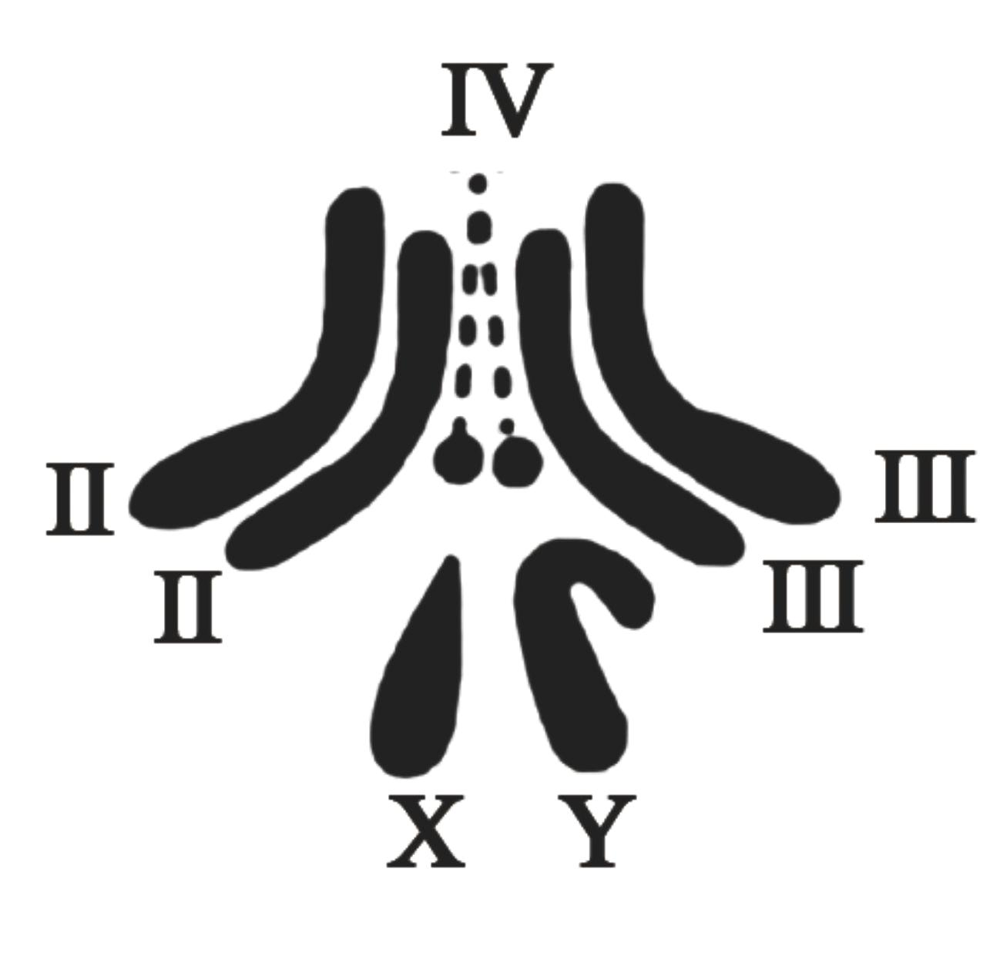

2023年北京中考生物 第19题 解析
19. 果蝇是遗传学研究中的模式生物，其性别决定方式与人的相同。下图为某果蝇体细胞中染色体组成图，相关叙述正确的是（ ）

A. 染色体主要由DNA和蛋白质组成B. 果蝇体细胞中有3对染色体
C. 该果蝇为雌性个体D. 该果蝇只产生一种生殖细胞
【答案】A
【解析】
【分析】由于果蝇性别决定方式与人基本相同，果蝇的体细胞内染色体也分为常染色体和性染色体。因此果蝇的体细胞中共有8条染色体，其中3对称为常染色体，第4对称为性染色体，性别主要是由性染色体决定的，雄性体细胞中的一对性染色体组成是XY，雌性体细胞中的一对性染色体组成是XX。
【详解】A．染色体是由DNA和蛋白质两种物质组成，染色体主要存在于细胞核中，DNA是主要的遗传物质，故A正确。
B．果蝇体细胞内的染色体是4对，染色体组成是3对+XY，生殖细胞中的4条染色体，故B错误。
C．根据题意和图示分析可知：图示表示果蝇的染色体组成图解，图中两条性染色体大小不同，因此该果蝇表示雄果蝇，其染色体组成可以表示为3对常染色体+XY，故C错误。
D．在亲代的生殖细胞形成过程中，两条性染色体彼此分离，雄果蝇产生两种类型的精子，含X染色体的精子和含Y染色体的精子，染色体组成为3条+X或3条+Y；雌果蝇则只产一种含X染色体的卵细胞，染色体组成为3条+X，故D错误。
故选A。